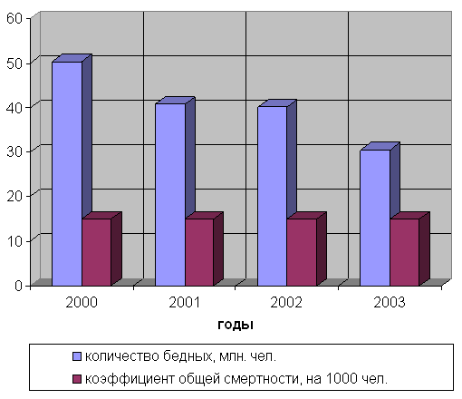

Социальный стресс, трудовая мотивация и здоровье
Величковский Б.Т.
академик РАМН, профессор, д.м.н., главный научный сотрудник отдела молекулярной биологии Российского государственного медицинского университета, Москва
Проанализированы социальные причины и патогенетические механизмы, которые в ходе реформ обусловили развитие сверхвысокой и сверхранней смертности лиц трудоспособного возраста, ухудшение физического развития и здоровья детей и подростков и отрицательный естественный прирост населения. Совокупность патологических процессов, вызвавших указанные изменения, точнее всего может быть обозначена как «социальный стресс». Специфическая причина возникновения социального стресса заключается в утрате населением эффективной трудовой мотивации. Хронический социальный стресс приводит к развитию фазы истощения общего адаптационного синдрома, срыву динамического стереотипа высшей нервной деятельности, формированию феномена «запрограммированной смерти организма - феноптоза», а также негативному проявлению повышенной гетерозиготности популяционного генофонда. С этих позиций становится понятной роль нерадиационной составляющей в чрезмерном ущербе здоровью ликвидаторов Чернобыльской аварии, а также причина сокращения срока профессиональной службы лиц опасных профессий и трудового стажа, работающих во вредных условиях труда. Показана возможность количественной оценки интенсивности социального стресса. Обоснованы приоритеты улучшения здоровья населения и выхода из демографического кризиса.
Содержание
- Роль нищеты, алкоголизма и других «традиционных» причин
- «Социальное производство нездоровья»
- Социальный стресс, его значение и отличительные черты
- Роль эффективной трудовой мотивации
- Физиологические механизмы формирования трудовой мотивации
- Последствия хронического социального стресса
- Можно ли количественно измерить интенсивность социального стресса?
- От тепличных условий для крупного бизнеса к эффективной трудовой мотивации для дееспособного населения
Литература
Ущерб, нанесённый реформами здоровью населения страны, получил нелицеприятную оценку Национального разведывательного совета США в докладе: «Глобальные тенденции развития человечества до 2015 года». В нём говорится, что население России не только сокращается, но и становится всё менее и менее здоровым, а значить, теряет способность служить движущей силой экономического возрождения.
Реформы длятся 14 лет. Однако нет единого мнения о том, каков лимитирующий фактор, определивший развитие медико-демографического кризиса?
1. Роль нищеты, алкоголизма и других «традиционных» причин
Для ответа на этот вопрос вначале следует прояснить непростые взаимоотношения между бедностью, воспроизводством и здоровьем населения России.
Нищета, возникшая в ходе реформ, наибольшее влияние оказала на снижение рождаемости, так как для большинства семей количество детей стало определяющим фактором бедности.
От бедности пострадали беременные женщины. Они превратились в группу высокого риска в связи с повышением частоты анемий, невынашивания беременности и осложнения родов. Это в свою очередь увеличило число детей, рождающихся больными.
Нищета оказала отрицательное влияние на физическое развитие и здоровье детей. Ускоренное физическое развитие (акселерация) сменилось замедлением физического развития (ретардацией). К тому же, по данным Института социально-экономических проблем народонаселения РАН, нищета породила порядка 2,8 миллиона беспризорных детей, больше, чем после Великой Отечественной войны [21].
Однако ухудшение материального благосостояния не приобрело решающего значения в подъёме смертности населения. Если бы указанная причина оказалась ведущей, подъём смертности в первую очередь затронул бы самые уязвимые возрастные группы: детей и престарелых. В этом случае темпы роста смертности всего населения были бы больше, чем лиц трудоспособного возраста. Но в действительности имеет место обратное явление: смертность лиц трудоспособного возраста растет быстрее, чем населения в целом [12] (табл. 1).
| Таблица 1. | Изменения коэффициентов общей смертности и смертности в трудоспособном возрасте (в том числе в % к 1991 году) |
| Годы |
Смертность населения* |
Смертность трудоспособного населения* |
| 1991 |
11,4 (100%) |
5,0 (100%) |
| 1992 |
12,2 (107%) |
5,8 (116%) |
| 1993 |
14,5 (127%) |
7,4 (148%) |
| 1994 |
15,7 (138%) |
8,4 (168%) |
| 1995 |
15,0 (132% |
8,0 (160%) |
| 1996 |
14,2 (125%) |
7,1(142%) |
| 1997 |
13,8 (121%) |
6,3 (126%) |
| 1998 |
13,6 (119%) |
5,0 (100%) |
| 1999 |
14,7 (129%) |
6,7 (134%) |
| 2000 |
15,4 (134%) |
7,3 (146%) |
| 2001 |
15,7 (138%) |
7,5 (150%) |
| 2002 |
16,3 (143%) |
7,8 (156%) |
| 2003 |
16,4 (144%) |
8,0 (160%) |
* на 1000 человек
Поэтому обнищание населения - не ведущая причина стремительного повышения уровня смертности [8].
Последние 4 года в России наблюдается удивительный парадокс: бедных в стране из года в год становится меньше на 5-6 миллионов, но смертность населения не снижается (рис. 1)
Главная причина этого парадокса заключается в том, что в стране неправильно определён критерий бедности. К этой категории сейчас относятся люди, у которых величина денежных доходов ниже прожиточного минимума. Однако, прожиточный минимум в России неоправданно низкий. Так, например, по данным ВОЗ трудоспособный человек должен потреблять 75-80 кг мясопродуктов в год, а по нормам российской «потребительской корзины» - 31,5 кг [27].

Рис. 1. Соотношение уровня смертности и численности бедного населения
Не случайно, при опросах общественного мнения своё материальное положение оценивают как «плохое и очень плохое» 50 миллионов россиян, то есть на 20 миллионов больше, чем по данным Госкомстата.
Вторая причина заключается в том, что в ходе реформ, наряду с обнищанием, на здоровье населения оказывают влияние и другие значимые факторы.
В последнее время снова начинает возобладать мнение, что главной причиной высокой смертности населения является алкоголизм. Так, в изданной в 2003 году коллективной монографии «Здоровье населения России в социальном контексте 90-х годов: проблемы и перспективы» утверждается, что «доминирующая роль этого фактора несомненна» [26].
Злоупотребление алкоголем и его суррогатами, действительно, играет свою зловещую роль в повышении смертности населения, так как для многих пьянство стало наиболее доступным способом «решения» житейских проблем. На роль алкоголя указывает высокий удельный вес в смертности трудоспособного населения таких причин, как несчастные случаи, отравления и травмы. Вместе с тем, удельный вес смертности населения от этих причин во все годы реформ остается в три с лишним раза ниже смертности от болезней кровообращения (рис. 2).
Рис. 2. Коэффициенты смертности населения, на 1000 чел.
Поэтому алкоголизм, будучи, безусловно, значимой причиной повышения смертности населения, особенно трудоспособного возраста, не является доминирующим фактором.
Курение табака, наркомания, неблагополучие в состоянии окружающей среды, условиях труда и техники безопасности - всё это также важные причины ухудшения здоровья населения. Но все перечисленные факторы лишь отчасти повинны в сокращении продолжительности жизни.
И в России, и за рубежом ведутся интенсивные исследования причин высокой российской смертности, социальных и экономических факторов, от которых она зависит. Однако, когда речь идёт о таких масштабах сокращения численности населения, дело не может сводиться к действию отдельных, даже очень важных факторов. Нужны какие-то системные объяснения, которые требуют критического анализа главных целей общества, его приоритетов и, в конечном счёте, их серьёзного пересмотра [10].


")